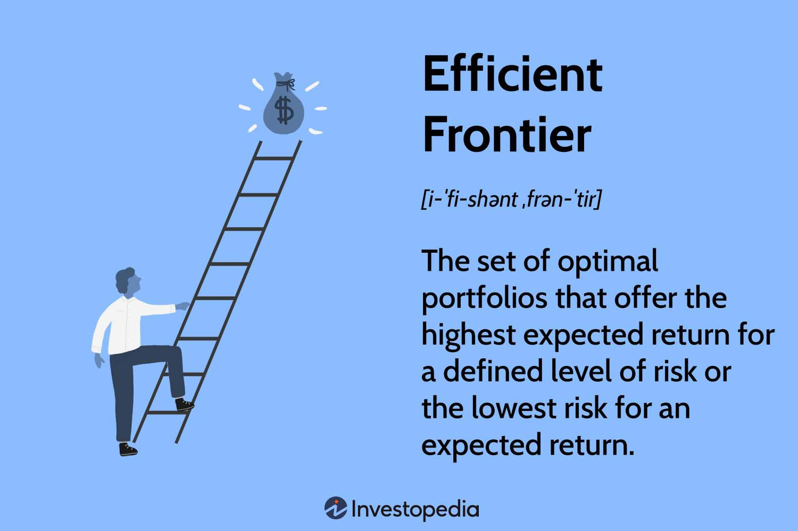

D-Wave Ocean SDK Framework with Simulated Annealing
This tutorial outlines how to use the D-Wave Ocean SDK to formulate and solve a QUBO optimization problem using simulated annealing. Simulated annealing runs entirely on the local machine, so no access to the D-Wave Leap quantum cloud service is required.
In this section, we outline how to install the D-Wave Ocean SDK. It is recommended that the Ocean SDK be installed inside a Python virtual environment rather than directly into the system as virtual environments keep the packages used for this project isolated from other Python projects and avoid potential dependency conflicts.
The virtual environment can also be registered as a Jupyter kernel, allowing a Jupyter notebook to run directly inside the same environment in which the Ocean SDK is installed. To create a virtual environment and activate it in macOS or Linux run,
python3-m venv oceansource ocean/bin/activate
To create and run a virtual environment in Windows’ command shell run,
python -m venv oceanocean\Scripts\activate.bat
Once the environment is activated, any Python packages installed with pip will be installed inside the ocean environment rather than globally. To install the Ocean SDK and other libraries that will be used run,
Note after opening the Jupyter Notebook make sure to select the “Ocean Environment” kernel.
Review
Recall that quantum annealers are designed to solve certain classes of optimization problems, one of the most common being Quadratic Unconstrained Binary Optimization (QUBO) problems. D-Wave’s Quantum Processing Unit (QPU) represents these problems using an Ising Hamiltonian of the form
where the coefficients \(h_i\) represent individual biases and \(J_{ij}\) represent interactions between pairs of spins. Using a simple change of variables between Ising spins and binary variables, typically
This allows an optimization problem written as a QUBO to be mapped directly onto the Ising model implemented by the D-Wave hardware. The QPU uses a network of superconducting qubits whose interactions are programmed according to the coefficients of the problem. During quantum annealing, the system is driven toward low-energy configurations of the Ising Hamiltonian. After measurement, these spin configurations can be converted back into binary variables, with the lowest-energy solutions corresponding to minima of the original QUBO objective function. Learn more about the physics of quantum annealing in this notebook!
Optimization Problem Statement: Markowitz Portfolio Optimization
A common financial optimization problem is known as the Markowitz mean variance portfolio optimization. It states that given a set of assets with known expected returns and correlations, the goal is to determine how much of a portfolio should be allocated to each asset.
It states that an optimal portfolio balances two competing objectives: maximizing expected return while minimizing financial risk. The set of portfolios that provide the best possible return for a given level of risk forms what is known as the efficient frontier.

Say we have a collection of assets in a portfolio and the variable,
represents the fraction of the portfolio allocated to each asset, where \(\mu_i\) is the expected return of asset \(i\) and \(\Sigma\) is the covariance matrix describing the risk and correlations between assets. The expected of the portfolio is given by the expression,
\[\boldsymbol{\mu}^{T}\mathbf{w},\]
while the portfolio variance, which is used as a measure of risk, is given by the expression,
\[\mathbf{w}^{T}\Sigma\mathbf{w}.\]
The optimization problem can therefore be written as
where the first term penalizes portfolio risk and the second term rewards expected return. In this optimization problem we also require the entire portfolio to be allocated, or simply put the weights must sum to \(1\).
\[\sum_i w_i = 1\]
Because a QUBO is an unconstrained optimization problem, this condition can be included using a quadratic penalty,
\[\lambda_3 \left( \sum_i w_i - 1 \right)^2.\]
Therefore complete objective function we seek to mimize becomes,
Here, \(\lambda_1\) controls the importance of expected return, \(\lambda_2\) controls the penalty associated with portfolio risk and \(\lambda_3\) controls the portfolio normalization constraint. Something worth noting is that the portfolio weights \(w_i\) are continuous variables, while a QUBO requires binary variables. So to represent each portfolio weight using several binary variables we look at its binary expansion
Substituting these binary representations into the objective converts the portfolio optimization problem into a quadratic function of binary variables,
\[H(\mathbf{x})=\mathbf{x}^{T}Q\mathbf{x}.\]
Yahoo Finiance Data
For this demonstration we get the average returns from Yahoo Finiance from the yfinance library (ensure it is installed in this virtual environment). A full list of the assets accessable are given here.
import yfinance as yfassets = ["AAPL", "MSFT", "NVDA", "CSCO", "ORCL", "QCOM", "IBM"]start="2025-04-04"end="2026-04-04"data = yf.download(assets, start=start, end=end)closing_prices = data["Close"].pct_change().dropna()# The 252 represents the number of business days in a yearreturns = closing_prices.mean() *252covariance = closing_prices.cov() *252
[*********************100%***********************] 7 of 7 completed
Using Ocean’s Simulated Annealing Sampler
The
from collections import defaultdictQ = defaultdict(float)lambda_1 =1.0# Portfolio risk lambda_2 =100.0# Budget constraintlambda_3 =1.0# Expected returnbits_per_asset =12# Binary coefficients used to represent each portfolio weight: ~ 1/2, ~ 1/4, ~1/8, ... bit_weights = [2**k / (2**bits_per_asset -1) for k inrange(bits_per_asset)]
This loop enumerates the binary variables of the encoding. For each asset \(i \in \{1,\dots,n\}\) and each bit index \(k \in \{0,\dots,b-1\}\), it registers the variable \(x_{ik}\) together with the asset it belongs to and its associated coefficient \(c_k\), where
This yields a total of \(nb\) binary variables. Storing each variable alongside its asset index and coefficient allows the subsequent construction of the QUBO matrix to retrieve \(\mu_i\), \(\sigma_{ij}\) and \(c_k\) directly, without re-deriving them from the variable labels.
variables = []for asset in assets:for k inrange(bits_per_asset): variable =f"{asset}_{k}" coefficient = bit_weights[k] variables.append((variable, asset, coefficient))
This loop assigns the diagonal entries of the QUBO matrix. Since \(x_{ik}^2 = x_{ik}\) for binary variables, every squared term collapses to a linear one and lands on the diagonal:
The three contributions come from the risk term, the expected return, which is linear and so appears only here, and the budget penalty. The constant \(\lambda_1\) left over from expanding the penalty carries no variables and is omitted, as it shifts every energy equally and does not change the minimizer.
This loop assigns the off-diagonal entries of the QUBO matrix. The inner index begins at \(a+1\) so that each unordered pair is visited exactly once, with the factor of \(2\) absorbing the symmetric counterpart:
The two contributions come from the cross terms of \(\mathbf{w}^\top\Sigma\mathbf{w}\) and of the budget penalty; the expected return, being linear, contributes nothing here. Pairs with \(i = j\) are included, since \(\sigma_{ij}\) then reduces to the variance \(\sigma_{ii}\) and these terms form part of the risk of a single asset.
Because simulated annealing runs on a classical computer rather than on a QPU, there is no hardware graph to map the problem onto and no minor embedding step. Any QUBO can be passed to the sampler directly, regardless of how its variables are connected.
Simulated annealing mimics the physical annealing process. Each run starts from a random configuration at a high effective temperature, where moves that increase the energy are often accepted, and the temperature is then lowered over a series of sweeps so that the search gradually settles into a low-energy configuration. Ocean provides this through SimulatedAnnealingSampler, which is part of the dwave-samplers package included in the Ocean SDK.
from dwave.samplers import SimulatedAnnealingSamplersampler = SimulatedAnnealingSampler()sampleset = sampler.sample_qubo(Q, num_reads=1000)best = sampleset.first # returns lowest energy sample in the SampleSetsolution =dict(best.sample) print("Solution (binary representation of weights):")# Prints the binary output in a readable format for asset in assets: bits ="".join(str(solution[f"{asset}_{k}"]) for k inreversed(range(bits_per_asset)))print(f" {asset:<10}{bits}")print("Energy:", best.energy)
Solving for the weights gives the following graph.
import matplotlib.pyplot as pltportfolio = {}for asset in assets: portfolio[asset] =sum(bit_weights[k] * solution[f"{asset}_{k}"] for k inrange(bits_per_asset))plt.figure(figsize=(7, 6))plt.bar(portfolio.keys(), portfolio.values())plt.title("Portfolio Asset Weights")plt.xlabel("Assets")plt.ylabel("Weight")plt.xticks(rotation=90)plt.tight_layout()plt.show()